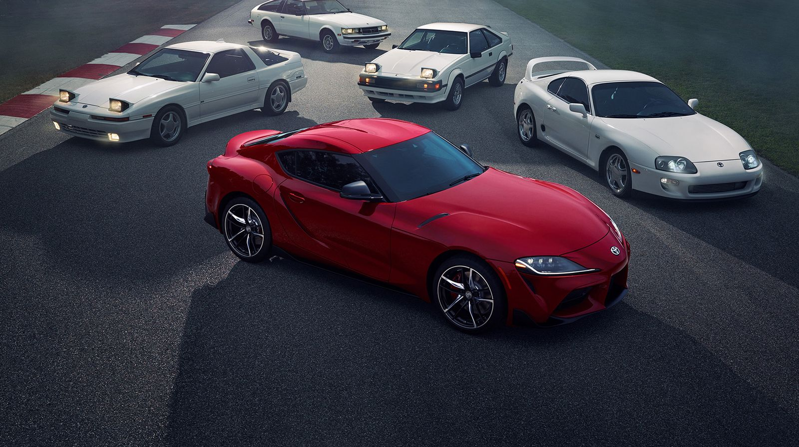

 Toyota Supra
Every Generation from the Mk1 to Mk4
Explore
The Following Above Cars Are Mainly Do Not Manufactor During This Time Their Manufactoring Stopped So If You Want To Buy The Above Following Cars So You Can Buy Is From Second-Hand Or Contact The Near Toyota Show-Room
Explore The Surprise